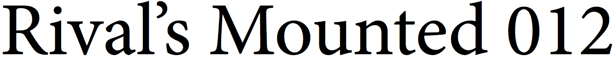
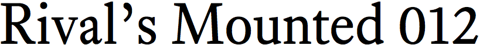
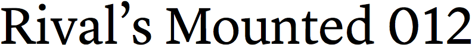

minion

equity

valkyrie

century supra

lyon
Dear Pro Designers Who Use Adobe Software:
You need to stop using Minion.
Not because it’s a bad font. I have no complaint with Minion as a work of type design.
You need to stop because Minion is not a font choice. It is the absence of a font choice. For many years, Minion has been bundled with Adobe design software. It became the default font starting in CS5. And that’s the main reason you use it. Not because you like it. Rather, because it’s already there.
As a typographic shortcut, this is worse than the average computer user who relies on arial or times new roman or calibri. Because unlike the average computer user, you’re supposed to know about typography and better fonts. You’re not supposed to rely on the defaults.
I can’t force you to investigate the wide world of professional fonts. But some gentle shaming—that I can do.
Imagine what would happen if your clients, or your employer, decided they could get their design projects done by relying on defaults. You’d be out of a job, right? Your work depends on people who care enough to go beyond the defaults and hire you.
That’s also true of type designers. They depend on people like you to go beyond default fonts like Minion. And when you don’t—well, maybe you’re applying an inconsistent standard. You don’t want defaults to be good enough for your clients, yet you want them to be good enough for you.
The four text faces above—they’re the tiniest tip of the font iceberg. But they’re not Minion. And you’ve got to start somewhere.
While we’re here, please also stop using the
“optical spacing” setting in InDesign. See metrics vs. optical spacing for why.